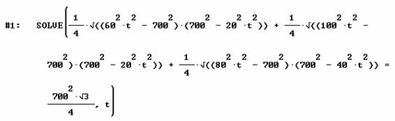
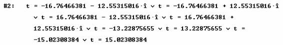
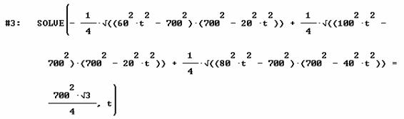
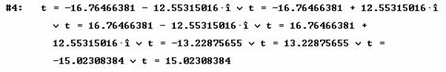

En el desierto del Sahara y en tres puntos A, B, C, que forman los vértices de un triángulo equilátero de 700 km de lado, se encuentran tres vehículos cuyas velocidades respectivas son de 20 km/h, 40 km/h y 60 km/h, comunicados por radio con el centro de operaciones, reciben la orden de partir a reunirse lo antes posible. ¿Dónde está situado el punto de la reunión?
Solución del profesor Nicolás Rosillo. Dpto. Matemáticas, IES Máximo Laguna (Santa Cruz de Mudela, Ciudad Real) (1 de julio de 2003)
PRIMER CASO: LOS MÓVILES NO HAN DE ESTAR SIEMPRE EN MOVIMIENTO
El momento de reunión se produce cuando entre los dos móviles más lentos recorren una distancia ya recorrida por el mayor. Así, cuando el móvil más rápido ha recorrido 700 km, se pueden encontrar los otros dos siempre y cuando el trayecto que hagan sea recorrer ambos en sentidos contrarios el lado AB.
Por tanto, el tiempo mínimo para la reunión será:
La reunión se produce en ese instante, a km. del vértice A recorridos en el lado AB.
El móvil C lleva ya un ratillo esperando.
SEGUNDO CASO: LOS MÓVILES ESTÁN SIEMPRE EN MOVIMIENTO
En este caso cuando los móviles coincidan se forman tres triángulos:
Uno de lados 700, 20t y 40t
Un segundo de lados 700, 40t y 60t
Y un tercero de lados 700, 60t y 20t
Imponiendo la condición de que la suma de las áreas de los tres triángulos sea igual a la del triángulo equilátero de lado 700, y usando como formula del área del triángulo siendo s el semiperímetro, se obtiene, pidiendo a DERIVE que resuelva la ecuación, la solución para t=13.22875655 horas. Esto indica que el punto de reunión está fuera del triángulo equilátero, pues el móvil más rápido recorre 793,725 km., el más lento 264,575 y el intermedio 529,150 km.


Por estar el punto de reunión fuera del triángulo, se podría suponer que no debería ser la suma de las áreas, sino la resta de la menor a las dos mayores la que debiera dar lugar al triángulo equilátero. Desde el punto de vista computacional, las soluciones no varían.

